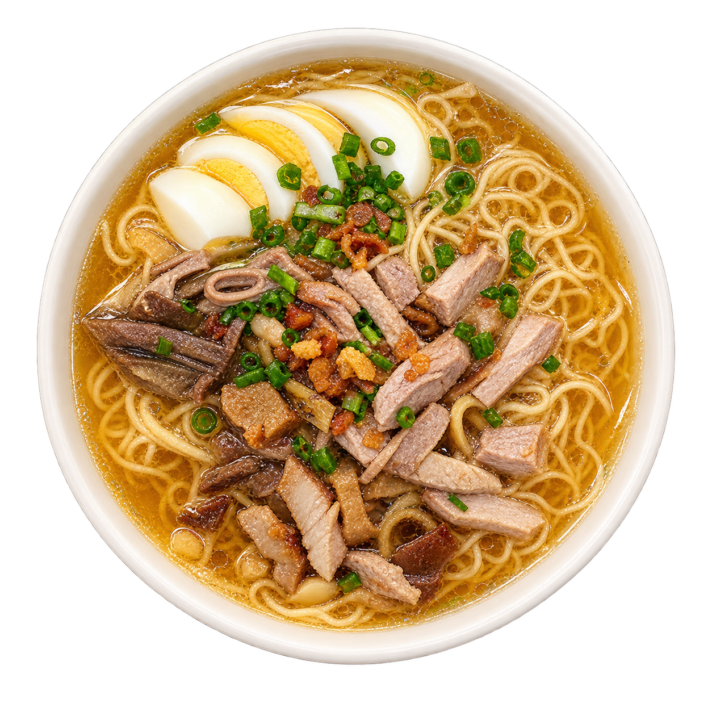
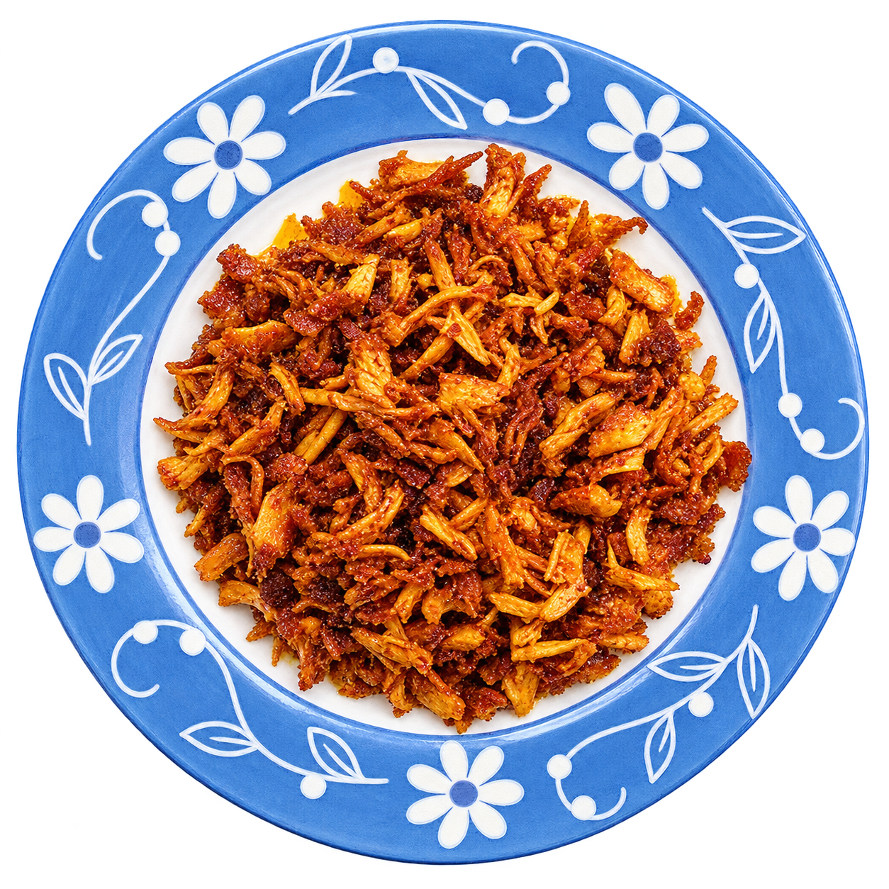
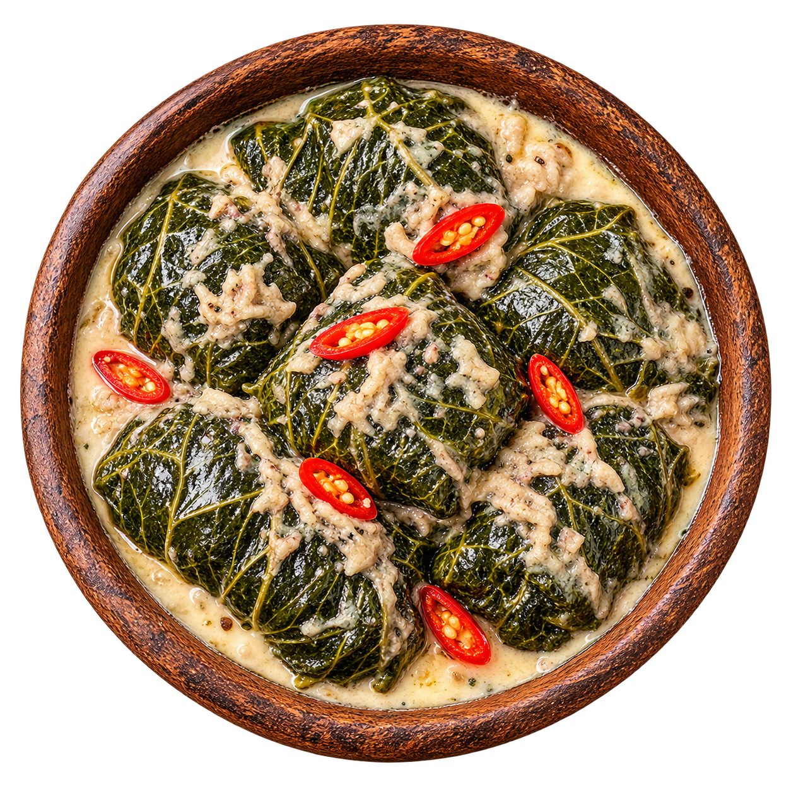

Every Region Has a Story to Taste.
From the hearty flavors of Luzon to the vibrant dishes of Visayas and Mindanao, discover the food traditions of every corner of the Philippines.
Where Will Your Food Journey Begin?
Discover the culinary identity of the Philippines through its three major island groups.
-
Luzon
NORTHERN PHILIPPINES
Discover rich regional specialties, comforting home-cooked dishes, and bold flavors from the country's largest island.
Explore Luzon -
Visayas
CENTRAL PHILIPPINES
Experience island-inspired cuisine, fresh seafood, and beloved dishes deeply rooted in local traditions.
Explore Visayas -
Mindanao
SOUTHERN PHILIPPINES
Explore diverse culinary traditions, aromatic spices, and distinctive dishes shaped by many cultures.
Explore Mindanao
Regional Favorites
Get to know some of the dishes that represent the diverse food traditions of the Philippines.
NORTHERN PHILIPPINES
Luzon
-

BICOL
Bicol Express
A Bicol regional specialty described as a spicy pork stew with coconut milk and chili peppers.
Source: Visit Bicol food guide
Read about Bicol Express -
ILOCOS
Ilocos Empanada
A crisp rice-wrapper pastry with varied fillings. A Vigan account records shredded papaya, cabbage, and bean sprouts, with later versions adding Vigan longganisa.
Source: Inquirer: Vigan empanada report
Read about Ilocos Empanada -

PAMPANGA
Sisig
A Kapampangan pork dish, commonly made with finely chopped meat, onions, and chili in a tangy dressing. Recipes vary and may use other proteins.
Source: Kawaling Pinoy: Sizzling Sisig
Read about Sisig
CENTRAL PHILIPPINES
Visayas
-

CEBU
Cebu Lechon
Roasted pig celebrated through Cebu's Lechon Festival and as part of Cebuano food heritage.
Source: Cebu Daily News: Lechon Festival
Read about Cebu Lechon -

LA PAZ, ILOILO
La Paz Batchoy
A noodle soup associated with La Paz, Iloilo. An Inquirer report covers a University of the Philippines study focused on a batchoy association.
Source: Inquirer: UP study on batchoy
Read about La Paz Batchoy
SOUTHERN PHILIPPINES
Mindanao
-

MAGUINDANAO
Chicken Pastil
Rice topped with sautéed shredded chicken and wrapped in a banana leaf; BARMM lists pastil among Maguindanao's Eid'l Fitr favorites.
Source: BARMM: Bangsamoro delicacies
Read about Chicken Pastil

A Taste of Bicol
A local Bicol food guide describes Bicol Express as a spicy pork stew with coconut milk and chili peppers, and pinangat as a dish made with taro leaves and coconut milk.
Source: Visit Bicol food guide
- Bicol Express
- Laing
- Pinangat
There's More to the Philippines Than Meets the Plate
Every province has something special to share. Keep exploring and find your next favorite Filipino dish.
Discover Filipino Foods